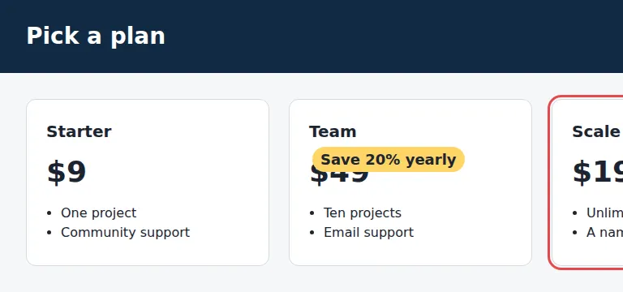

check integrity
A pricing page that breaks on smaller screens
Three cards in a row that never wraps, a badge pinned on top of a price, and feature lists cut off by a fixed height. The page looks fine in the editor's preview width.
Open the page under test · examples/demos/integrity/page.html
Run it
vlmkit check integrity examples/demos/integrity/page.html

What to look at
It sweeps 1280, 768 and 375px in one run. The overflow is reported with the element that sticks out and its right edge; the badge is found by sampling the price's glyphs and seeing 75% of them land on the badge instead.
The fix
Let .plans wrap (or stack below 768px), move the badge out of the price's box, and drop the fixed height on .features.
What vlmkit printed
vlmkit check integrity examples/demos/integrity/page.html · exit 1 — the command fails, as a gate in CI would
vlmkit check integrity source: examples/demos/integrity/page.html verdict: DEFECTS (2 fail, 3 warn, 0 exempted) 1280x800: 4 component(s), ink 88.9%, 17 text block(s) 768x900: 4 component(s), ink 9.8%, 17 text block(s) 375x700: 4 component(s), ink 7.5%, 17 text block(s) Findings: x [page-overflow-x] @768,375: The page scrolls horizontally by 212px at 768px viewport width — sticking out: div.plans > section:nth-of-type(3) (right edge 980px), div.plans > section:nth-of-type(3) > h2:nth-of-type(1) (right edge 955px), div.plans > section:nth-of-type(3) > p:nth-of-type(1) (right edge 955px). x [occluded-text] div.plans > section:nth-of-type(2) > p:nth-of-type(1) @1280,768: "$49" (div.plans > section:nth-of-type(2) > p:nth-of-type(1)) is painted over by an opaque element span.badge @1280 — 75% of sampled glyph points hit the occluder instead of the text. Move or shrink the covering element, or reorder the stacking so the text stays readable. ! [clipped-content] div.plans > section:nth-of-type(1) > ul:nth-of-type(1) @1280,768,375: div.plans > section:nth-of-type(1) > ul:nth-of-type(1) clips 20px of its content behind overflow: hidden — cut-off content unless the oversize is decorative. ! [clipped-content] div.plans > section:nth-of-type(2) > ul:nth-of-type(1) @1280,768,375: div.plans > section:nth-of-type(2) > ul:nth-of-type(1) clips 20px of its content behind overflow: hidden — cut-off content unless the oversize is decorative. ! [clipped-content] div.plans > section:nth-of-type(3) > ul:nth-of-type(1) @1280,768,375: div.plans > section:nth-of-type(3) > ul:nth-of-type(1) clips 20px of its content behind overflow: hidden — cut-off content unless the oversize is decorative.